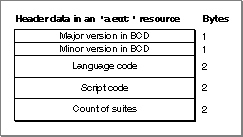

Header Data for an Apple Event Terminology Resource
The header for an'aeut'or'aete'resource specifies the version of its contents, the language of the human-language equivalents contained in the resource, a script code, and a count of the number of suites the resource describes. Figure 8-2 shows the header format.Figure 8-2 Structure of the header data in an
'aeut'or'aete'resource
The header contains the following items:
- The major version number of the content of the resource in binary-coded decimal (the major version number for the first release of the
'aeut'resource is 1). The major and minor versions describe the content of the resource, not its template. You can use these fields to provide version numbers for the content of your application's'aete'resource.- The minor version number of the template in binary-coded decimal (the minor version number for the first release of the
'aeut'resource is 0).- The language code for the resource. Inside Macintosh: Text provides a list of language codes. This code must be the same as the resource ID for the resource.
- The script code for the resource, taken from the list of script codes provided in Inside Macintosh: Text.
- A count of the number of suites described by the resource.